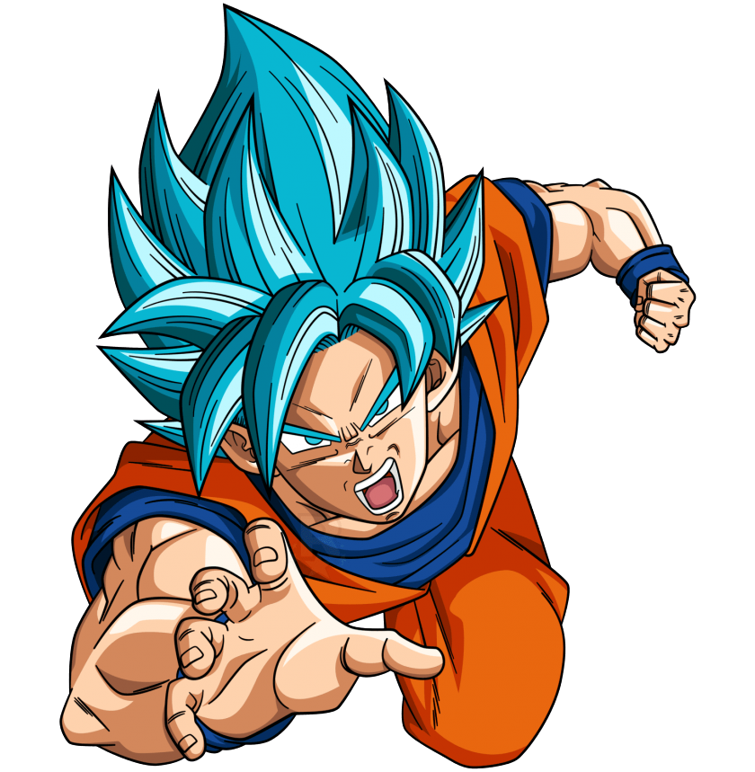
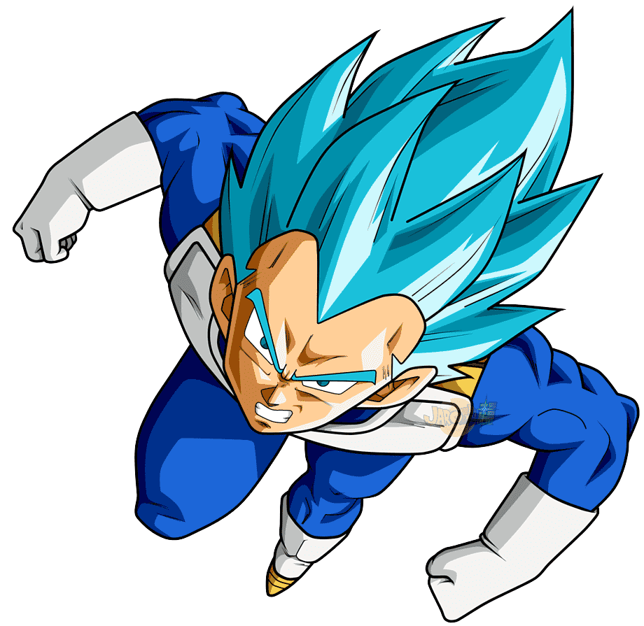
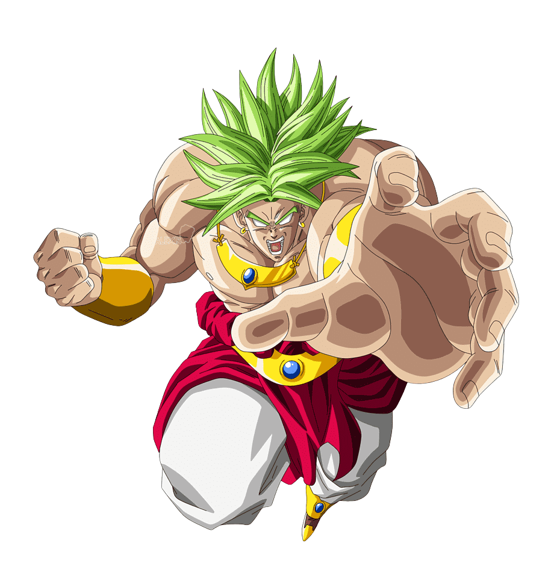

1- Son Goku
Nome Verdadeiro: Kakarotto
Espécie:Saiyajin
Planeta Natal:Planeta Vegeta
Esposa:Chi-Chi
Goku é o protagonista de Dragon Ball Z, um guerreiro Saiyajin enviado à Terra quando bebê. Criado por um ancião chamado Son Gohan, ele se tornou um defensor do planeta. Em Dragon Ball Z,Goku enfrenta ameaças cósmicas como Vegeta, Freeza, Cell e Majin Buu, sempre superando seus limites.Ele foi o primeiro Saiyajin a se transformar em Super Saiyajin, símbolo de esperança contra o mal. Com um coração puro e uma paixão por lutas justas, Goku é conhecido por seu espírito guerreiro,força imensa e capacidade de perdoar até seus inimigos.
2- Vegeta
Título:Príncipe dos Saiyadins
Espécie:Saiyajin
Planeta Natal:Planeta Vegeta
Esposa:Bulma
Filhos:Trunks e Bra (aparece depois, em Dragon Ball Super)
Vegeta é o príncipe da raça Saiyajin, um guerreiro orgulhoso, poderoso e determinado.Inicialmente um vilão em Dragon Ball Z, ele chega à Terra ao lado de Nappa, mas após sua derrota por Goku, passa a ter um papel mais ambíguo — entre rival e aliado. Obcecado por superar Goku, Vegeta treina incansavelmente, atingindo formas como o Super Saiyajin e até se sacrificando pela Terra na luta contra Majin Buu.Ao longo da série, ele evolui de um guerreiro frio e impiedoso para um herói relutante, sem perder seu orgulho e atitude feroz. Apesar de sua arrogância, Vegeta mostra grande crescimento emocional, especialmente por sua família e seu papel na defesa da Terra.
3- Broly
Espécie:Saiyajin
Planeta Natal:Vegeta
Pai:Paragus
Transformação mais marcante:Super Saiyajin Lendário
Broly é um Saiyajin de poder extraordinário, exilado ainda bebê por ser considerado perigoso. Criado em isolamento por seu pai Paragus, cresce com grande força e raiva reprimida. Em Dragon Ball Super: Broly, ele enfrenta Goku e Vegeta,revelando seu poder descomunal como Super Saiyajin Lendário.Apesar da fúria em combate, Broly é inocente e manipulável, e no fim encontra paz ao lado de Cheelai e Lemo no planeta Vampa.